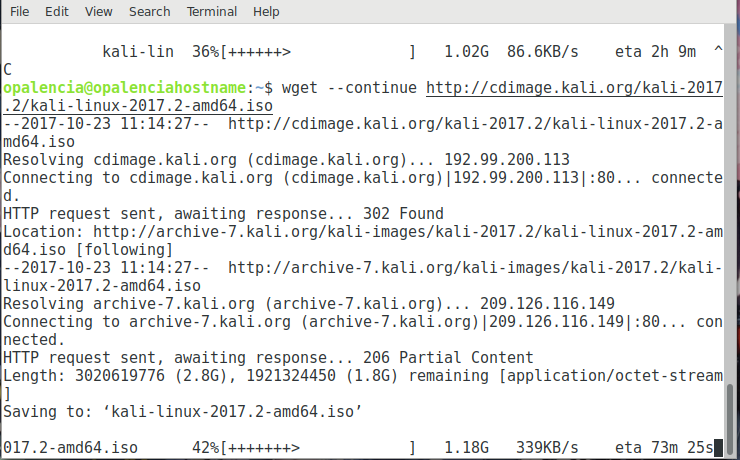

Descargar archivos de internet > wget¶
Nombre del comando: wget
Man page online: https://linux.die.net/man/1/wget
Descripción: Descargar archivos de internet de forma no interactiva. Soporta los protocolos HTTP, HTTPS, FTP, FTPS. Lo fundamental de este commando es restaurar descargas interrumpidas (por fallas electricas, internet lento, servidores caídos, entre otras razones), dicha tarea no la realizan los navegadores.
Man page local: $ man wget o $ man wget > wget.txt
Instalado por defecto: Sí, al menos en Debian.
Algunas Opciones:
-c, --continue Continúa la descarga en donde se quedó al interrumpirse.
-i file Descargar de forma masiva, todas las rutas de los archivos contenidos en un archivo de texto.
--retry-connrefused Intentá conectarte al servidor nuevamente si hay alguna falla.
-T seconds, --timeout=seconds Es el tiempo de espera para realizar peticiones a la red de internet, pasado dicho tiempo en segundos la descarga se cancelaría al no haber respuesta.
-t number, --tries=number Intenta conectarte n veces, 0 o inf intentará conectarse infinitamente.
Ejemplo 1:
wget http://cdimage.kali.org/kali-2017.2/kali-linux-2017.2-amd64.iso
en este ejemplo se descargará kali en la carpeta actual, si se desea descargar en un lugar específico, agregar dicha ruta: $ wget URL –directory-prefix=/path/to/folder.
Ejemplo 2:
wget --continue http://cdimage.kali.org/kali-2017.2/kali-linux-2017.2-amd64.iso
en este ejemplo se continuará la descarga de kali si por algún motivo se interrumpió. La desventaja que tiene es que hay que realizar la invocación de forma manual, lo ideal sería que lo haga automáticamente. Por ejemplo, dejas en tu hojar descargando un archivo muy grande y te vas todo el dia, se fue la luz a los pocos minutos que dejaste la casa; dicha descarga no avanzará a menos que le pongas el parámetro –continue, pero no hay nadie en la casa, todo ese tiempo será desperdiciado. Leyendo mas a fondo la man page, éstos parámetros son los que se deben agregar para que después de interrumpida la descarga se vuelva a reanudar automáticamente.
$ wget -c --retry-connrefused -t 0 -T 180 http://cdimage.kali.org/kali-2017.2/kali-linux-2017.2-amd64.iso
--retry-connrefused, conectate al server nuevamente.
-t 0, intenta conectarte n veces, 0 significa infinitamente hasta descargar por completo el archivo.
-T 180, si la descarga no se ha reaunudado despues de 3 minutos, ésta se cancelará.
Le he asignado 3 minutos para el caso particular que se fue la luz y
el router tiene que reiniciarce nuevamente.
Ejemplo 3: $ wget -i allpackages.txt, en este ejemplo se descargarán a la carpeta actual todos los archivos que contenga URL’S propiamente definidas en el archivo de texto “allpackages.txt”. En el archivo “allpackages.txt” no debe haber espacios ni nada raro, solo las URL’S separadas por un ENTER.
Ejemplo 4:
wget -r --no-parent https://comandoslinux.github.io/``,
en este ejemplo descargo todo el sitio web de esta documentación de los comandos linux para tener una copia exacta en mi computadora. Recomiendo hacer tu propio respaldo si usas esta documentación, ya que no se si github será para siempre.